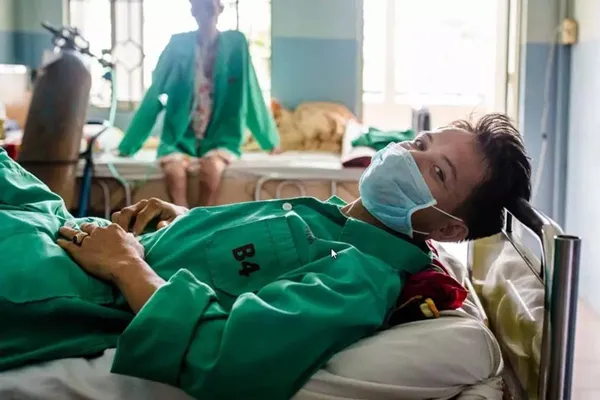
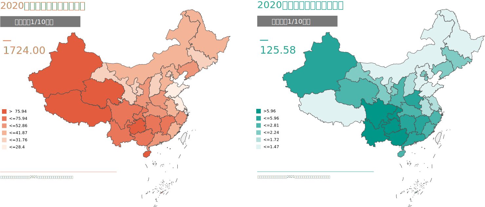

结核病没有完全实现脱贫，农村健康传播仍十分必要，各地均有行动
当前，在全球范围内，结核病高发于经济欠发达地区。 在中国，中西部地区患病率较高，农牧民为最主要发病人群。
面对肺结核，许多农村家庭面临灾难性支出。学术界对“灾难性医疗支出”有两种常用的定义， 一是指卫生支出超过家庭年收入的一定比例（通常为10%）；二是指卫生支出超过家庭非食品等必需的支出40%。
“我在医院住了90天，做了五次纤维支气管镜检查……我参加了城镇居民基本医疗保险，自付费用超过20,000元。 我是农民，我借钱来支付费用……”
研究指出，“绝对贫困”（年收入低于4369元）的肺结核患者发生灾难性支出的比例是82.3%， “相对贫困”（年收入为4369元至12647元）的患者发生灾难性支出的比例是52.2%，而普通患者发生灾难性支出的比例也达到了31%。
若患者具备年龄偏大、教育水平较低、治疗期间住过院、没有工作或病患收入占家庭总收入的50%等特点中的任何一个，该患者家庭极可能因病致贫或因病返贫。

尽管政府对结核病患者提供了免费的涂片和X光诊断、 免费一线药物治疗，但辅助治疗不在免费范围内。因病致贫、因病返贫的现象仍在发生。
“有时医院缺药，我需要去药房买更贵的药……辅助药可能不在医保范围内。”
“我需要去私人诊所打针……每次打针付给私人诊所20元。”
医生表示，作为医院的成本控制规定，公共医疗保险未涵盖的药物被限制在处方总费用的10%以内， 而这些抗耐药结核治疗所必需的药物有时会出现供不应求的情况。 出于这些原因，患者经常被要求在药店购买药品。 有时患者甚至不得不使用私人提供的医疗服务，例如从定点医院出院后进行静脉注射药物。
“我咯血了，从a医院（县级医院）转到b医院（地级结核病定点医院）……我住院了一个多月。 出院一个月后，我的病情复发了，b医院的医生让我去c医院（地级综合医院）做更多检查，我在那里花了2万多元……”
耐药结核患者经常伴随有并发症，但并发症的治疗费用不符合额外报销或援助的条件。 健康保险办公室主任表示，“如果患者病情严重的并发症， 如慢性阻塞性肺疾病和咯血，他们的治疗费用会非常高，有时甚至需要转移到重症监护室。我们无法对这些患者支付费用。”
“我总共住院6到9个月，我需要支付超过100,000元才能获得报销。”
此外，可以通过医疗救助或补充报销的支出往往不直接从总费用中扣除，患者需要先付款才能获得报销。
“住院期间钱用光了，出院后没有吃药……”
一些患者承认，他们因经济困难而耽误治疗。
2020年中国居民健康素养水平为23.15%，其中农村居民的健康素养水平为20.02%，低于全国平均水平。在六类健康问题中，居民的传染病防治素养也是相对较低的。
防护意识不强，使结核病菌容易传播。 有网友指出了村民共用吸烟桶的现象：“年龄大的村民缺乏保护意识，每天在小卖部相聚聊天，还一起共用抽烟桶。”
不良的卫生习惯，如随地吐痰，痰液干燥后随尘埃飞扬，被人吸入肺内，使人容易感染结核菌。
研究发现，艾滋病、肺结核均高发于农村地区。

2020年全国肺结核、艾滋病发病率总体上西部高于东部，其中四川艾滋病发病率最高，其次是广西、云南。
各省市监测或调查数据显示，农村或职业为农民的HIV/AIDS病例构成比例较大。 广西艾滋病监测显示，2010—2017年新报告的HIV/AIDS病例共计85182例。疫情以农村为主， 职业为农民的占68.4%，农民构成比呈增长趋势，由2010年的61.7%逐年增至2017年的70.7%。 四川省截至2017年底累计报告HIV/AIDS病例143998例，职业为农民的占60.0%。
感染艾滋病，死于肺结核。医学资料显示，肺结核缩短了艾滋病病毒感染者的期望寿命； 反过来艾滋病病毒也攻击免疫系统，从而促进结核菌的传播，并使得许多结核菌携带者最终发展成肺结核患者。 肺结核病已成为当前艾滋病患者死亡的主要原因。WHO数据显示，HIV携带者中约有35%因结核病死亡。
治疗意识不强，结核病的治疗常常失去跟进。
研究发现，男性结核病患者不像女性积极寻求治疗。 2020年全球数据显示，成年男性占所有结核新发病例的56%；成年女性占33%，儿童占11%。
我国农村的很多乡镇卫生所缺少专业的肺结核检测设备， 医护人员也缺乏专业的诊断与治疗能力。很多肺结核患者往往会被当作普通感冒或咳嗽处理。
国家给结核病提供了免费治疗，但部分村民并不清楚具体政策，往往耽误治疗。
“这是我们村唯一的光棍了， 患了肺结核我问他怎么不医，他说没钱，每天还大捆大捆的扛东西，哪家需要帮忙只要喊他都去。”
坚持正规治疗，肺结核是可治愈的。有些患者认为病情不影响生活，不进行正规治疗， 或者在短期治疗后不按医嘱服药。这些做法会使治疗不彻底， 进而可能导致疾病复发，发展为不易治疗的耐多药结核病，造成更大的治疗负担。
结核病防控专家王撷秀说：“耐多药结核病发现率低、病原学确诊率低、筛查率低、耐药率高。”
耐多药结核病的患者至少对目前的两种一线治疗药物——异烟肼和利福平产生耐药性。
现有的耐药结核疗程漫长而复杂，一个标准流程长达20-24个月，药物不仅具有相当大的肝肾毒性， 副作用显著，且价格昂贵，整个治疗过程费用是普通结核的上百倍。即使免费治疗，普通患者坚持治疗两年也很困难。
2017年宁夏将结核病纳入基本医疗保险大病门诊。 2018年政策指出，居民医疗费用由基本医疗保险和地方专项资金分摊，耐药结核病患者需自付费用占总治疗费用的 10%。
2018年吉林通过社会和政府资金的覆盖来减轻农村贫困结核病患者面临的经济负担。 该政策与针对农村地区贫困结核病患者的农村扶贫政策相联系， 贫困的农村结核病患者仅需自付10%的住院费用和20%的门诊费用。
2019年浙江省提高城乡居民基本医疗保险门诊覆盖率。 结核病纳入慢性病门诊计划，基层医疗机构门诊报销比例≥70%。
对于结核病和耐多药结核病患者来说，这些经济政策是否足够？
尽管有政策支持，在具体实施时，各地仍面临一些阻碍。
一些医疗救助项目只针对极端贫困人口。事实上，许多患者在支付医疗费用方面面临困难， 但没有资格获得医疗援助。有些符合救助条件的患者抱怨申请程序复杂，领取补贴时间长。
欠发达省份的地方政府常面临财政困难，对社会保障的投入不足。
此外，因为缺乏行政权限，且利益相关者有不同利益， 地方疾控中心难以在多个部门（医保局、民政局和财政局）之间协商和协调结核病治疗的新融资政策。 这导致新的融资政策的发布和实施出现延误。
新冠肺炎疫情大流行造成的经济和健康危机也对资源的筹集和调动提出了较大的挑战， 对欠发达地区的挑战尤为严峻。